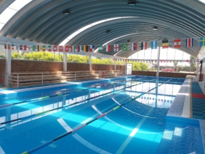

El club Recreativo Villa Azul se ignauro el 15 de enero del 2000 en la ciudad de Guatemala. Nos gusta consentir a nuestros alumnos con los mejores servicios y intructures profesionales ya que para nosotros es importante que el alumno se sienta comodo.
Siendo uno de los clubs mas reconocidos, en el ambito familiar con muchas instalaciones creativas. Cuenta con muchos programas de actividades, variedad de juegos, espacios al aire libre, zonas creativas y de aprendizaje.
Donde puede disfrutar toda la familia con cursos.

Adicionalmente se ignauraron más actividades el 20 de marzo de 2010, siendo una de las boleras con mejores instalaciones y con un dia festivo de bolos.